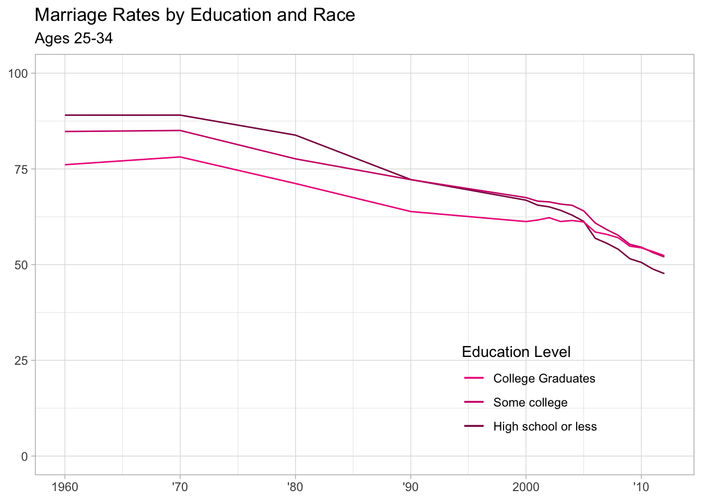
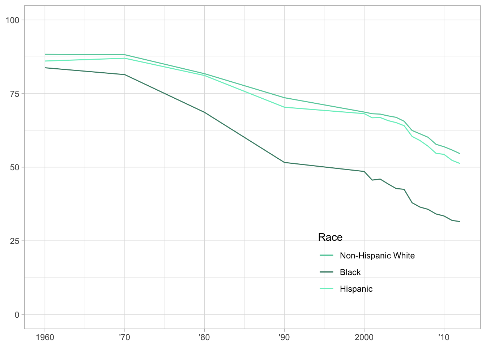
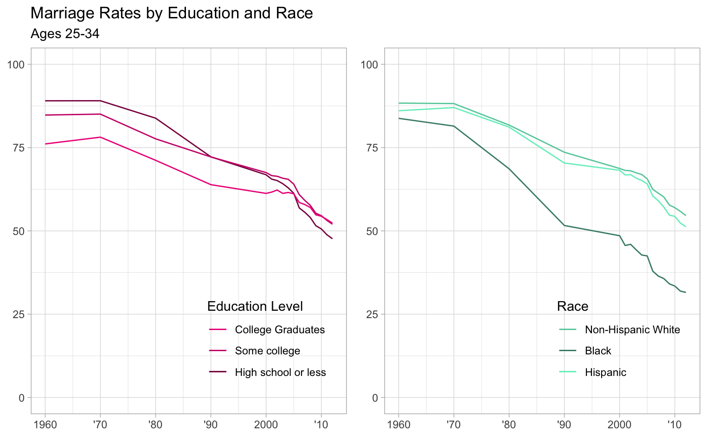

Visualization
For this exercise, I will be [attempting to] recreate a figure I found at fivethirtyeight.com. Here is the link to the data if you want to try recreating it as well!
Getting Started
Here is the figure I want to recreate.

My chosen figure to replicate
First, I need to load the packages I’ll need to complete this exercise.
# package loading
library(tidyverse) # for analysis and plotting## ── Attaching packages ─────────────────────────────────────── tidyverse 1.3.1 ──## ✓ ggplot2 3.3.5 ✓ purrr 0.3.4
## ✓ tibble 3.1.4 ✓ dplyr 1.0.7
## ✓ tidyr 1.1.3 ✓ stringr 1.4.0
## ✓ readr 2.0.1 ✓ forcats 0.5.1## ── Conflicts ────────────────────────────────────────── tidyverse_conflicts() ──
## x dplyr::filter() masks stats::filter()
## x dplyr::lag() masks stats::lag()library(cowplot) # for combining plots into one figure Now I need to import the data set for the figure I want to recreate and set is as a new object.
#import dataset and set to new object
marriage <- read_csv('marriage/both_sexes.csv')## New names:
## * `` -> ...1## Rows: 17 Columns: 75## ── Column specification ────────────────────────────────────────────────────────
## Delimiter: ","
## dbl (74): ...1, year, all_2534, HS_2534, SC_2534, BAp_2534, BAo_2534, GD_25...
## date (1): date##
## ℹ Use `spec()` to retrieve the full column specification for this data.
## ℹ Specify the column types or set `show_col_types = FALSE` to quiet this message.glimpse(marriage) # take a lot at the first bit of the dataset ## Rows: 17
## Columns: 75
## $ ...1 <dbl> 1, 2, 3, 4, 5, 6, 7, 8, 9, 10, 11, 12, 13, 14, 15, 16…
## $ year <dbl> 1960, 1970, 1980, 1990, 2000, 2001, 2002, 2003, 2004,…
## $ date <date> 1960-01-01, 1970-01-01, 1980-01-01, 1990-01-01, 2000…
## $ all_2534 <dbl> 0.1233145, 0.1269715, 0.1991767, 0.2968306, 0.3450087…
## $ HS_2534 <dbl> 0.1095332, 0.1094000, 0.1617313, 0.2777491, 0.3316545…
## $ SC_2534 <dbl> 0.1522818, 0.1495096, 0.2236916, 0.2780912, 0.3249205…
## $ BAp_2534 <dbl> 0.2389952, 0.2187031, 0.2881646, 0.3612968, 0.3874906…
## $ BAo_2534 <dbl> 0.2389952, 0.2187031, 0.2881646, 0.3656655, 0.3939579…
## $ GD_2534 <dbl> NA, NA, NA, 0.3474505, 0.3691740, 0.3590304, 0.351284…
## $ White_2534 <dbl> 0.1164848, 0.1179043, 0.1824126, 0.2639256, 0.3127149…
## $ Black_2534 <dbl> 0.1621855, 0.1855163, 0.3137500, 0.4838556, 0.5144994…
## $ Hisp_2534 <dbl> 0.1393736, 0.1298769, 0.1885440, 0.2962372, 0.3180681…
## $ NE_2534 <dbl> 0.1504184, 0.1517231, 0.2414327, 0.3500384, 0.4091852…
## $ MA_2534 <dbl> 0.1628934, 0.1640680, 0.2505925, 0.3623321, 0.4175565…
## $ Midwest_2534 <dbl> 0.1121467, 0.1153741, 0.1828339, 0.2755046, 0.3308022…
## $ South_2534 <dbl> 0.1090562, 0.1126220, 0.1688435, 0.2639794, 0.3099712…
## $ Mountain_2534 <dbl> 0.09152117, 0.10293602, 0.17434230, 0.25264326, 0.306…
## $ Pacific_2534 <dbl> 0.1198758, 0.1374964, 0.2334279, 0.3319579, 0.3753061…
## $ poor_2534 <dbl> 0.1371597, 0.1717202, 0.3100591, 0.4199108, 0.5033676…
## $ mid_2534 <dbl> 0.07514929, 0.08159207, 0.14825303, 0.24320008, 0.302…
## $ rich_2534 <dbl> 0.2066776, 0.1724093, 0.1851082, 0.2783226, 0.2717386…
## $ all_3544 <dbl> 0.07058157, 0.06732520, 0.06883378, 0.11191800, 0.156…
## $ HS_3544 <dbl> 0.06860309, 0.06511964, 0.06429102, 0.11210043, 0.169…
## $ SC_3544 <dbl> 0.06663695, 0.06271724, 0.06531333, 0.09699372, 0.138…
## $ BAp_3544 <dbl> 0.1326265, 0.1116899, 0.1056102, 0.1285172, 0.1541238…
## $ BAo_3544 <dbl> 0.1326265, 0.1116899, 0.1056102, 0.1258567, 0.1536299…
## $ GD_3544 <dbl> NA, NA, NA, 0.1328018, 0.1550970, 0.1595169, 0.158009…
## $ White_3544 <dbl> 0.06825586, 0.06250372, 0.05966739, 0.09611312, 0.132…
## $ Black_3544 <dbl> 0.08836728, 0.10290904, 0.13140081, 0.22010298, 0.302…
## $ Hisp_3544 <dbl> 0.07307651, 0.07070500, 0.08110790, 0.12194206, 0.154…
## $ NE_3544 <dbl> 0.09194322, 0.08570110, 0.07997323, 0.12785915, 0.173…
## $ MA_3544 <dbl> 0.09347468, 0.09040725, 0.09744428, 0.14354989, 0.188…
## $ Midwest_3544 <dbl> 0.06863360, 0.06156272, 0.06070641, 0.10157576, 0.145…
## $ South_3544 <dbl> 0.06026353, 0.05966057, 0.05914089, 0.09637035, 0.142…
## $ Mountain_3544 <dbl> 0.04739747, 0.04651163, 0.04880077, 0.09189904, 0.135…
## $ Pacific_3544 <dbl> 0.05822486, 0.06347796, 0.07552538, 0.13134638, 0.174…
## $ poor_3544 <dbl> 0.1019749, 0.1117548, 0.1291426, 0.2012208, 0.2813137…
## $ mid_3544 <dbl> 0.04717272, 0.04566838, 0.05050321, 0.09024739, 0.128…
## $ rich_3544 <dbl> 0.08553870, 0.06499159, 0.04445951, 0.06573916, 0.086…
## $ all_4554 <dbl> 0.07254649, 0.05968794, 0.05250871, 0.05947824, 0.088…
## $ HS_4554 <dbl> 0.06840792, 0.05833439, 0.05036563, 0.05988244, 0.094…
## $ SC_4554 <dbl> 0.07903755, 0.05443478, 0.04816180, 0.04654087, 0.075…
## $ BAp_4554 <dbl> 0.15360889, 0.10466047, 0.08623774, 0.07301884, 0.092…
## $ BAo_4554 <dbl> 0.15360889, 0.10466047, 0.08623774, 0.06416529, 0.090…
## $ GD_4554 <dbl> NA, NA, NA, 0.08394886, 0.09362802, 0.09362876, 0.101…
## $ White_4554 <dbl> 0.07246692, 0.05754799, 0.04765354, 0.05092552, 0.075…
## $ Black_4554 <dbl> 0.06913249, 0.07899168, 0.08624602, 0.11617699, 0.175…
## $ Hisp_4554 <dbl> 0.06636058, 0.05810740, 0.06522951, 0.07613556, 0.094…
## $ NE_4554 <dbl> 0.10236412, 0.08028082, 0.06930253, 0.07047502, 0.102…
## $ MA_4554 <dbl> 0.09264788, 0.07860635, 0.07508466, 0.08373134, 0.112…
## $ Midwest_4554 <dbl> 0.07285321, 0.05791163, 0.04807290, 0.05398391, 0.083…
## $ South_4554 <dbl> 0.05977295, 0.05174462, 0.04485348, 0.05043636, 0.076…
## $ Mountain_4554 <dbl> 0.04754183, 0.03970134, 0.03374438, 0.04459411, 0.076…
## $ Pacific_4554 <dbl> 0.05996993, 0.04826312, 0.04958992, 0.06461875, 0.098…
## $ poor_4554 <dbl> 0.1030055, 0.1016489, 0.1003011, 0.1148335, 0.1718976…
## $ mid_4554 <dbl> 0.05364421, 0.04221637, 0.03830266, 0.04562332, 0.070…
## $ rich_4554 <dbl> 0.07908591, 0.05142867, 0.03311296, 0.03136386, 0.038…
## $ nokids_all_2534 <dbl> 0.4640564, 0.4309043, 0.4464304, 0.5425242, 0.5714531…
## $ kids_all_2534 <dbl> 0.002820625, 0.009868596, 0.025285667, 0.060277451, 0…
## $ nokids_HS_2534 <dbl> 0.4430148, 0.4246779, 0.4319342, 0.5464881, 0.5711395…
## $ nokids_SC_2534 <dbl> 0.5000402, 0.4333479, 0.4505900, 0.5238446, 0.5700042…
## $ nokids_BAp_2534 <dbl> 0.5619099, 0.4554766, 0.4719700, 0.5560765, 0.5729677…
## $ nokids_BAo_2534 <dbl> 0.5619099, 0.4554766, 0.4719700, 0.5633301, 0.5862213…
## $ nokids_GD_2534 <dbl> NA, NA, NA, 0.5332628, 0.5367160, 0.5258800, 0.526189…
## $ kids_HS_2534 <dbl> 0.003318886, 0.012465915, 0.031930752, 0.078470444, 0…
## $ kids_SC_2534 <dbl> 0.001150824, 0.003699982, 0.018135401, 0.052032702, 0…
## $ kids_BAp_2534 <dbl> 0.0005751073, 0.0014683425, 0.0062544364, 0.017124104…
## $ kids_BAo_2534 <dbl> 0.0005751073, 0.0014683425, 0.0062544364, 0.018176602…
## $ kids_GD_2534 <dbl> NA, NA, NA, 0.01374234, 0.02761467, 0.02645041, 0.024…
## $ nokids_poor_2534 <dbl> 0.4933061, 0.5097742, 0.5740402, 0.6546908, 0.7055451…
## $ nokids_mid_2534 <dbl> 0.4100080, 0.3764538, 0.3998250, 0.5186604, 0.5690228…
## $ nokids_rich_2534 <dbl> 0.4921184, 0.4288948, 0.3848089, 0.4750156, 0.4458023…
## $ kids_poor_2534 <dbl> 0.008722711, 0.029974945, 0.077926214, 0.170763774, 0…
## $ kids_mid_2534 <dbl> 0.0007532065, 0.0033771145, 0.0102368871, 0.027465525…
## $ kids_rich_2534 <dbl> 0.0008027331, 0.0030435661, 0.0068317224, 0.018232912…Data Processing
There is a lot of information in this dataset, much of which I won’t need to create this figure, so I’m going to create another object only containing the data I need.
#create new object only containing the information needed to recreate figure
# (year, education level, race information for 25-34 year olds)
mymarriage <- marriage %>%
select(year, all_2534, HS_2534, SC_2534, BAp_2534, BAo_2534, White_2534, Black_2534, Hisp_2534)In the raw data, the values are the relevant proportion of the population that has never been married. However, the figure I’m recreating is the the proportion that has been married, so I need to take the values, subtract them from one, and then for ease of plotting on a percent scale, I will multiply by 100.
#change marriage rates from never married proportion to have been married percentage
mymarriaget <- mymarriage %>%
mutate(HS_2534 = (1 - HS_2534) * 100) %>%
mutate(SC_2534 = (1- SC_2534) * 100) %>%
mutate(BAp_2534 = (1 - BAp_2534) * 100) %>%
mutate(White_2534 = (1 - White_2534) * 100) %>%
mutate(Black_2534 = (1 - Black_2534) * 100) %>%
mutate(Hisp_2534 = (1 - Hisp_2534) * 100)Plot Creation
Now that I have my dataset set up the way I need it, I can go about creating my plots. The original figure is two plots in one figure, so I will create each plot individually and then combine them.
# create plot of marriage rate by education status
educ <- ggplot(data = mymarriaget, aes(x = year)) +
geom_line(aes(y = HS_2534, color = 'deeppink4')) + # high school or less
geom_line(aes(y = SC_2534, color = 'deeppink3')) + # some college
geom_line(aes(y = BAp_2534, color = 'deeppink2')) + # college graduates
scale_x_continuous(breaks = seq(from = 1960, to = 2012, by = 10), #imiating x scale on original
labels = c("1960", "'70", "'80", "'90", "2000", "'10")) +
ylim(0,100) +
theme(axis.title.x = element_blank(), axis.title.y = element_blank()) +
scale_color_identity(guide = 'legend', name = 'Education Level', # creating legend
breaks = c('deeppink2', 'deeppink3', 'deeppink4'),
labels = c('College Graduates', 'Some college', 'High school or less')) +
ggtitle('Marriage Rates by Education and Race','Ages 25-34') + # adding plot title
theme(legend.position = c(.75, .2)) + # positioning legend on bottom right of plot
theme(legend.background = element_blank()) + # getting rid of legend box outline and fill
theme(legend.key = element_blank())
educ
# create plot of marriage rate by race - this will be done essentially the same way as the education graph, but I will not add a title to this one - having a title on the first graph in the combined figure will keep the title positioned in the top right as in the original figure
race <- ggplot(data = mymarriaget, aes(x = year)) +
geom_line(aes(y = White_2534, color = 'aquamarine3')) + #white
geom_line(aes(y = Black_2534, color = 'aquamarine4')) + # black
geom_line(aes(y = Hisp_2534, color = 'aquamarine2')) + #hispanic
scale_x_continuous(breaks = seq(from = 1960, to = 2012, by = 10), #imitating x scale on original
labels = c("1960", "'70", "'80", "'90", "2000", "'10")) +
ylim(0,100) +
theme(axis.title.x = element_blank(), axis.title.y = element_blank()) +
scale_color_identity(guide = 'legend', name = 'Race', # creating legend
breaks = c('aquamarine3', 'aquamarine4', 'aquamarine2'),
labels = c('Non-Hispanic White', 'Black', 'Hispanic')) +
theme(legend.position = c(.75, .2)) + # positioning legend on bottom right of plot
theme(legend.background = element_blank()) + # getting rid of legend box outline and fill
theme(legend.key = element_blank())
race
Plot Combination and Figure Creation
Now that I have both of my plots created, I want to try and combine them into one figure, as that is how it was presented in the original figure.
To do this, I will use the cowplot package’s plot_grid function.
# combining my education and race plots into one figure, and aligning them both vertically and horizontally
finalvis <- plot_grid(educ, race, align = 'hv')
finalvis
# saving figure
figurefile = here::here('visualizationfigure.png')
ggsave(filename = figurefile, plot = finalvis)## Saving 8 x 4.96 in imageHere is the original figure again as a comparison
Conclusions
The two figures are certainly not exactly the same, but I think I got decently close! I spent some time playing around with the ggrepel package, trying to use geom_label_repel to create the line labels like in the original graph, but the data was not in the quite the right format to use that without some serious manipulation, which seemed like it would maybe be a little overboard for this exercise, so I went with adding a legend.
This was a great exercise in experimenting with visualization tools in R and all the associated packages. I’m looking forward to continuing to develop these skills! As we’ve seen and discussed this week, data visualization can be a powerful tool for presenting and communicating results. I hope to improve in this skill so that any analyses I perform can reach their full potential impact when presented to others.
Take two!
After seeing some of the successful code used by my classmates, I decided to try and get this a little closer to the original! The simplest improvement will be the use of the ggthemes function theme_fivethirtyeight() to apply a similar theme to the plots as their source. I will also use annotate() and geom_segment() to add the labels as in the original figure rather than using a legend.
Here we go with take two!
# load additional library to apply a closer theme to the original
library(ggthemes)##
## Attaching package: 'ggthemes'## The following object is masked from 'package:cowplot':
##
## theme_map# create plot of marriage rate by education status using annotation
educ2 <- ggplot(data = mymarriaget, aes(x = year)) +
geom_line(aes(y = HS_2534), color = 'deeppink4') + # high school or less
annotate('text', x = 1975, y = 98, # add high school label
label = 'High school or less') +
geom_segment(aes(x = 1975, xend = 1975, y = 86, yend = 95), # add high school label line
color = 'black') +
geom_line(aes(y = SC_2534), color = 'deeppink3') + # some college
annotate('text', x = 1983, y = 45,
label = 'Some college') + # add some college label
geom_segment(aes(x = 1983, xend = 1983, y = 76, yend = 48),
color = 'black') + # add some college label line
geom_line(aes(y = BAp_2534), color = 'deeppink2') + # college graduates
annotate('text', x = 1967, y = 64,
label = 'College graduates') + #add college grad label
geom_segment(aes(x = 1967, xend = 1967, y = 67, yend = 76.8),
color = 'black') + # add college grad label line
scale_x_continuous(breaks = seq(from = 1960, to = 2012, by = 10), #imitating x scale on original
labels = c("1960", "'70", "'80", "'90", "2000", "'10")) +
ylim(0,100) +
ggtitle('Marriage Rates by Education and Race','Ages 25-34') + # adding plot title
theme(axis.title.x = element_blank(),
axis.title.y = element_blank()) +
theme_fivethirtyeight()
educ2# create plot of marriage rate by race using annotation
race2 <- ggplot(data = mymarriaget, aes(x = year)) +
geom_line(aes(y = White_2534), color = 'aquamarine3') + #white
annotate('text', x = 1968, y = 98,
label = 'Non-Hispanic White') + # add white label
geom_segment(aes(x = 1964, xend = 1964, y = 88, yend = 95), # add white label line
color = 'black') +
geom_line(aes(y = Black_2534), color = 'aquamarine4') + # black
annotate('text', x = 1994, y = 43, # add black label
label = 'Black') +
geom_segment(aes(x = 1994, xend = 1994, y = 50, yend = 45),
color = 'black') + # add black label line
geom_line(aes(y = Hisp_2534), color = 'aquamarine2') + #hispanic
annotate('text', x = 1992, y = 83,
label = 'Hispanic') + #add hispanic label
geom_segment(aes(x = 1992, xend = 1992, y = 70, yend = 80),
color = 'black') + # add hispanic label line
scale_x_continuous(breaks = seq(from = 1960, to = 2012, by = 10), #imitating x scale on original
labels = c("1960", "'70", "'80", "'90", "2000", "'10")) +
ylim(0,100) +
theme(axis.text.y = element_blank(),
axis.title.x = element_blank(),
axis.title.y = element_blank()) +
theme_fivethirtyeight()
race2# combining my education and race plots into one figure, and aligning them both vertically and horizontally
finalvis2 <- plot_grid(educ2, race2, align = 'hv') +
theme_fivethirtyeight()
finalvis2# saving new figure
figurefile2 = here::here('visualizationfigure2.png')
ggsave(filename = figurefile2, plot = finalvis2)## Saving 11 x 8.8 in imageHere’s the original one more time for reference!
I’m happier with this one! There are definitely still some differences, but I think the labeling vs. the legend and the addition of the theme helped a lot. I’m happy I was able to learn more to get this closer!